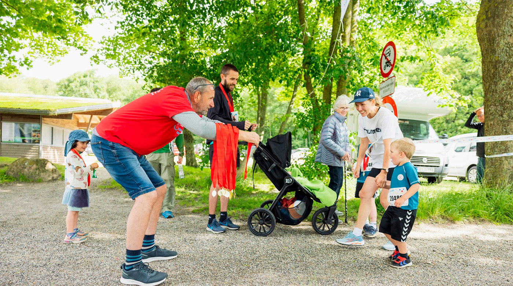
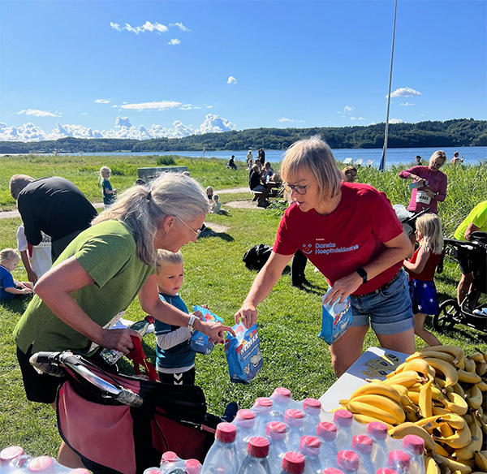

Hvad vil det sige at være frivillig hos Lys og Liv?
Som frivillig kan du være med i styregruppen for det enkelte event og være med til at organisere og gennemføre
eksempelvis Tirsbæk Strand Klovneløb. Klovneløbet støtter op om Danske Hospitalsklovne, som også støtter syge og sårbare
børn i Danmark.
Hvad laver du som frivillig?
Nogle af dine opgaver kan være at:
Tiltrække flere deltagere ved at lave PR - fx sociale medier og presse
Planlægge underholdning eller andre aktivieter på pladsen
Finde sponsorer
Stå ved salgsboder eller aktiviteter på pladsen og logistik, fx telte og borde, samt mad til de frivillige.
Hjælpe med at udlevere vand, frugt samt medaljer til løbsdeltagerne.
Hvor lang tid tager det?
Der er mange forskellige opgaver, og du bestemmer selv, hvor mange timer, du vil bruge. Dog vil de fleste frivillige
opgaver ligge i forbindelse med afholdelsen af løbseventen Tirsbæk Strand Klovneløb, som afholdes i slutningen af
August.

Frivillige jobs hos lys og liv lige nu
Digital fundraiser og indholdsproducent
Støtteforeningen Lys og Liv arbejder med at øge livskvaliteten hos børn og unge, som lever med alvorlige sygdom. For at løfte den ambition søger vi nu en ny frivillig til vort team for kommunikation, partnerskaber og privat fundraising. En digital stærk profil, der har lyst og evner at tiltrække nye private støtter og udvikle vores kommunikation i egne medier. Du skal kunne kaste og gribe en masse bolde, samt trives med frivilligt arbejde i en ny frivillig støtteforening.
Dine opgaver:
- Udvikling og eksekvering af digitale kampagner - særligt på Meta - fra ide og tekst til færdige annoncer og videoer
- Produktion af tekster og indhold til mails og landingpages - målrettet både private, virksomheder og fonde
- Drift og videreudvikling af støtteforeningen Lys og Liv